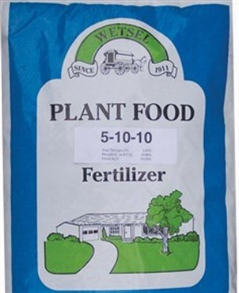

Description:
Complete Potato Fertilizer (5-10-10) is great for strong and healthy plant with little for new growth and crop production . it's a all round fertilizer.
Content:
1. Nitrogen (N): 5%
2. Phosphorus (P): 10%
3. Potassium (K): 10%
- Points:
- Nitrogen (N) promotes foliage growth and overall plant vigor, crucial during the early stages.
- Phosphorus (P) supports root development, tuber formation, and overall plant energy transfer.
- Potassium (K) enhances tuber quality, disease resistance, and overall plant health.
- Ideal for potatoes during planting and early growth stages to encourage robust root and tuber development.